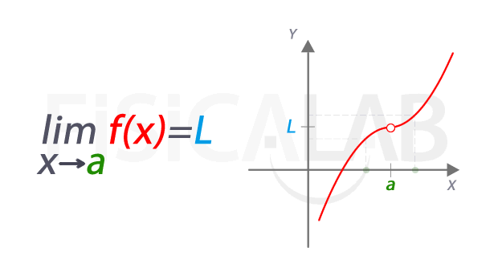

Los límites en cálculo son un concepto fundamental que describe el comportamiento de una función a medida que su entrada se acerca a un valor particular.
En términos matemáticos, el límite de una función ( f(x) ) cuando ( x ) tiende a un valor ( a ) es el valor al que se acerca ( f(x) ).
Se expresa como: x→a lim f(x) = LDonde ( L ) es el valor al que ( f(x) ) se aproxima cuando ( x ) se acerca a ( a ).
Este concepto es esencial porque permite entender y calcular el comportamiento de las funciones en puntos donde no están definidas o tienen comportamientos inusuales, como discontinuidades o asintotas. Por ejemplo, si una función tiene un “hueco” o un “salto” en un punto, el límite nos ayuda a entender a qué valor se acerca la función cerca de ese punto.